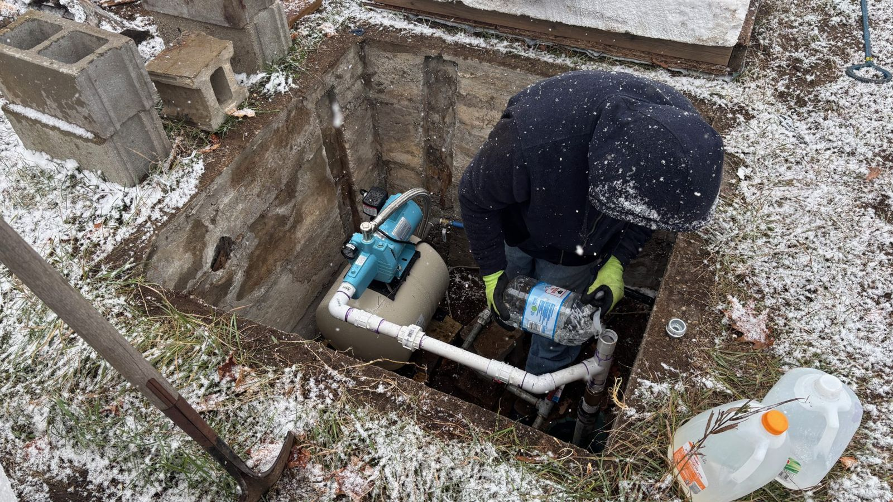
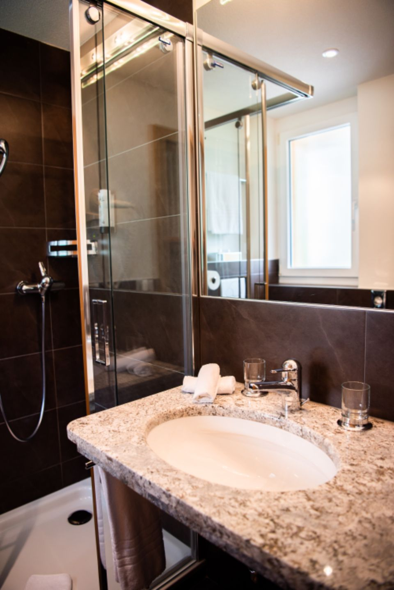
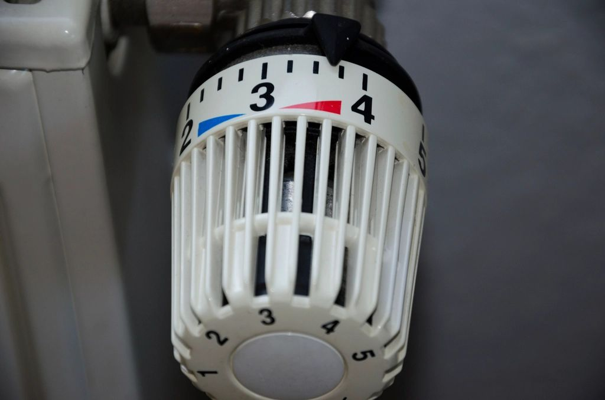

Kingfisher Plumbing
About
Plumbing & heating · Bristol
Our story
Local plumbers you can trust
Kingfisher Plumbing started in 2012 with one van and one plumber. Today we’re a team of five Gas Safe registered engineers, still family-run and still based in north Bristol.
Most of our work comes from word of mouth: homeowners, landlords and local businesses who call us back year after year.
Every engineer carries ID, wears shoe covers and tidies up after the job. We give you a written price before we start, and that’s the price you pay.


Reviews
What people say
★★★★★“Boiler packed up on a Sunday. They were here within two hours and had it running again. Brilliant.”Helen W., Redland
★★★★★“Fitted our new bathroom on time and on budget. Spotless work.”Mark & Joanne, Horfield
★★★★★“Honest, polite and fair prices. Told us a repair would do instead of a new boiler.”Raj P., Clifton
Example reviews for this demo website.


Kingfisher Plumbing · Plumbing & Heating
Need a plumber? Give us a call.
14 Ashley Down Road, Bristol BS7 9JN